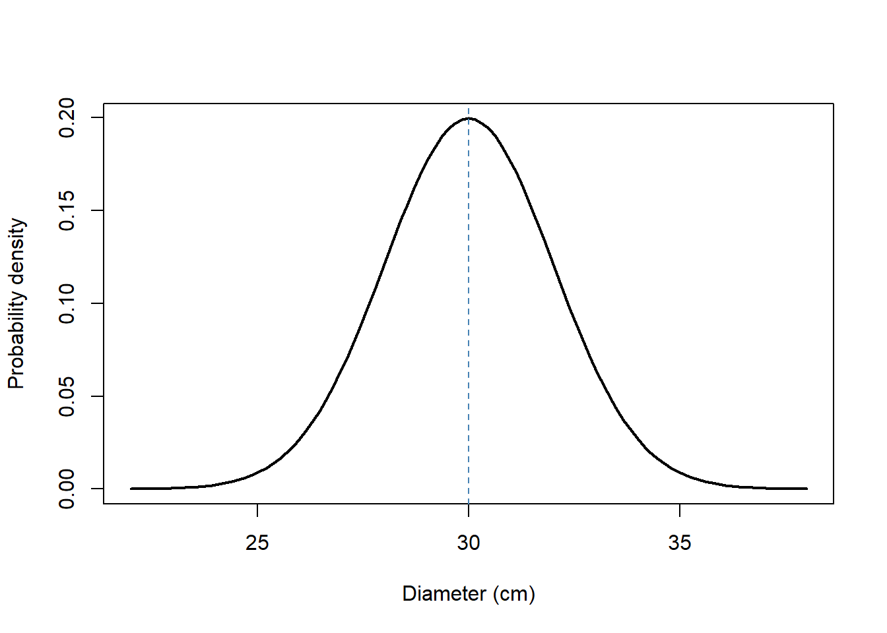
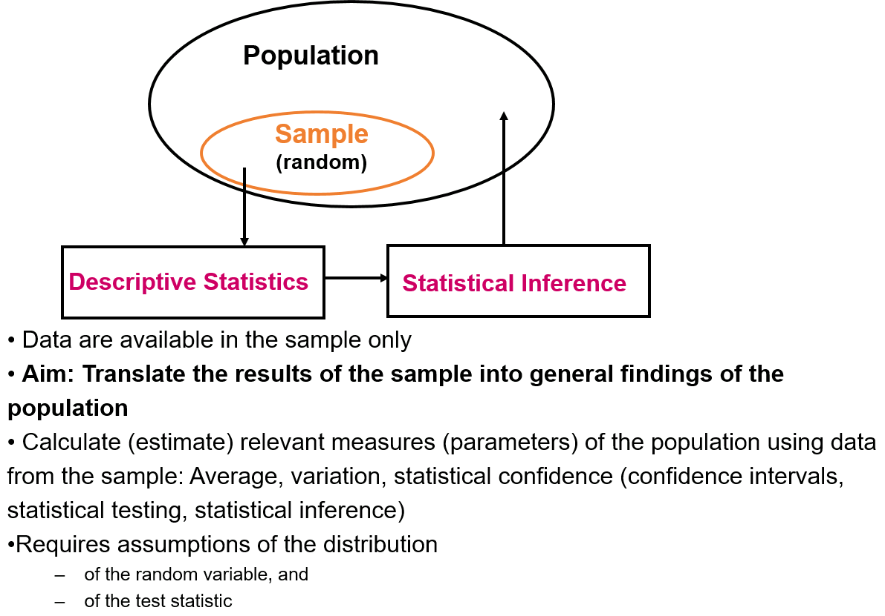
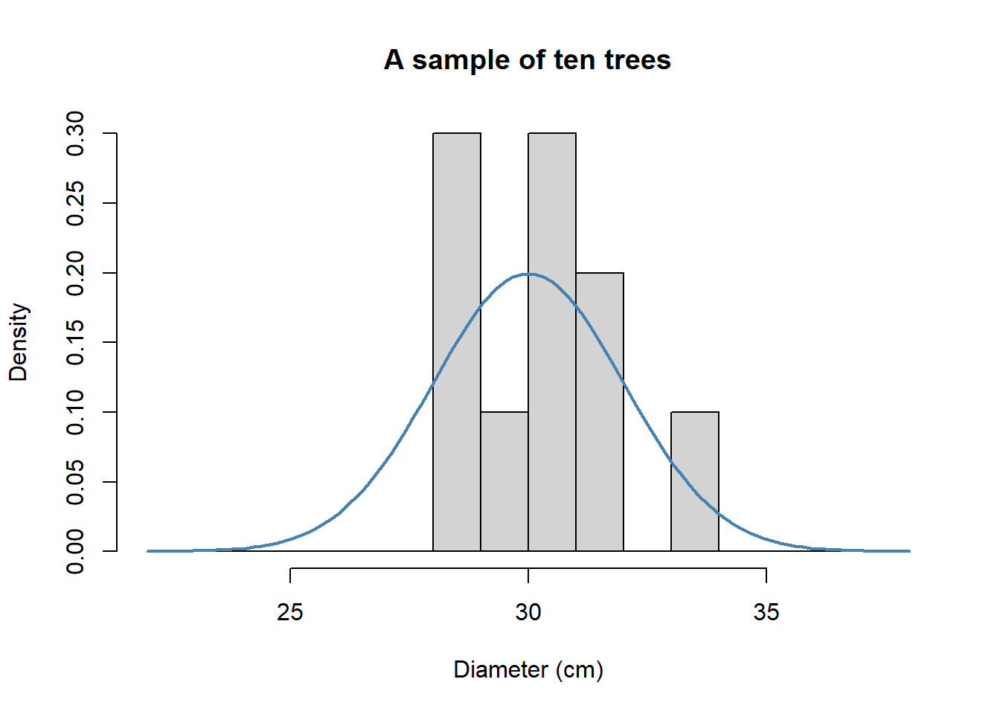

mu <- 30
sigma <- 2
curve(dnorm(x, mean = mu, sd = sigma), from = 22, to = 38,
xlab = "Diameter (cm)", ylab = "Probability density", lwd = 2)
abline(v = mu, col = "steelblue", lty = 2)
Suppose we want to know the average diameter of trees in a forest, but we can only measure a small sample. Calculating the average of those measurements is easy. The statistical question is harder: what does that number tell us about the forest?
We will use this example throughout the course. First we distinguish the population we want to understand from the sample we observe. Then we investigate how estimates vary and why particular estimation methods work.
By the end of this unit, you can distinguish a population parameter from a sample estimate, interpret a normal distribution, and use R to draw a sample and calculate its mean and standard deviation.

Our reasoning involves three different distributions:
| Level | Question | Example |
|---|---|---|
| Population distribution | How do individual values vary in the population? | Tree diameters in the forest |
| Observed sample distribution | Which values did we actually measure? | Diameters of ten sampled trees |
| Sampling distribution of an estimator | How would our estimate vary over repeated samples? | Means calculated from many samples of ten trees |
The third level is the focus of the next unit. For now, remember that a histogram of tree diameters and a histogram of sample means describe different things.
A random variable represents an outcome before it is observed. Let \(X\) represent the diameter at breast height of a randomly selected tree, measured in centimetres. For our teaching example, we assume
\[ X \sim N(\mu,\sigma^2), \qquad \mu=30, \quad \sigma=2. \]
The normal distribution has two parameters: the expectation \(\mu\), which describes its centre, and the standard deviation \(\sigma\), which describes its spread. Its variance is \(\sigma^2=4\) square centimetres. This is a deliberately simple model; real tree diameters need not follow a normal distribution.
mu <- 30
sigma <- 2
curve(dnorm(x, mean = mu, sd = sigma), from = 22, to = 38,
xlab = "Diameter (cm)", ylab = "Probability density", lwd = 2)
abline(v = mu, col = "steelblue", lty = 2)
The height of this curve is a density, not the probability of observing exactly that diameter. For a continuous distribution, probabilities correspond to areas under the curve over intervals. The cumulative distribution function \(F(x)=P(X\leq x)\) gives the area to the left of \(x\).
R uses a consistent naming scheme. The suffix identifies the distribution; the prefix identifies the operation.
| Prefix | Meaning | Normal-distribution example |
|---|---|---|
d |
Density | dnorm() |
p |
Cumulative probability | pnorm() |
q |
Quantile for a given cumulative probability | qnorm() |
r |
Random draws | rnorm() |
# Probability of a diameter between 28 and 32 cm
pnorm(32, mean = mu, sd = sigma) - pnorm(28, mean = mu, sd = sigma)[1] 0.6826895# Diameter below which 95% of the modelled population lies
qnorm(0.95, mean = mu, sd = sigma)[1] 33.28971The first result is about 0.68. The second is a diameter in centimetres, not a probability. Notice how pnorm() and qnorm() answer inverse questions.
Instead of constructing an artificial population tree by tree, we draw observations directly from the population model. Each draw in this example is independent and comes from the same distribution.
set.seed(1)
n <- 10
diameters <- rnorm(n, mean = mu, sd = sigma)
round(diameters, 2) [1] 28.75 30.37 28.33 33.19 30.66 28.36 30.97 31.48 31.15 29.39set.seed() makes the random example reproducible. Here the sampling mechanism is specified by our simulation that is intended to represent a random sample taken in the field.
hist(diameters, probability = TRUE, breaks = seq(22, 38, by = 1),
xlim = c(22, 38), main = "A sample of ten trees",
xlab = "Diameter (cm)")
curve(dnorm(x, mean = mu, sd = sigma), add = TRUE,
col = "steelblue", lwd = 2)
A small sample histogram is irregular even when the data come from a normal distribution. The sample does not have to reproduce the shape of its population exactly.
In a real study, \(\mu\) and \(\sigma\) are unknown. We estimate them from our observations \(x_1,\ldots,x_n\):
\[ \bar{x}=\frac{1}{n}\sum_{i=1}^{n}x_i, \qquad s=\sqrt{\frac{1}{n-1}\sum_{i=1}^{n}(x_i-\bar{x})^2}. \]
sample_mean <- mean(diameters)
sample_sd <- sd(diameters)
data.frame(quantity = c("Mean", "Standard deviation"),
population = c(mu, sigma),
sample_estimate = c(sample_mean, sample_sd)) quantity population sample_estimate
1 Mean 30 30.264406
2 Standard deviation 2 1.561172The population parameters stay fixed when we draw another sample; the estimates usually change. The denominator \(n-1\) makes \(s^2\) an unbiased estimator of the population variance under independent, identically distributed sampling with finite variance. This does not make \(s\) itself exactly unbiased.
The arithmetic mean can estimate a population expectation without assuming normality. The normal model will become important later when we derive the mean using maximum likelihood.
Change the seed and draw another sample of ten trees. Compare the mean and standard deviation with the population values. Then increase the sample size to 100. Explain which quantities you expect to become more stable and which quantities remain fixed.
We now have a sample estimate of the population mean. The next question is how much that estimate would change if we repeated the study.